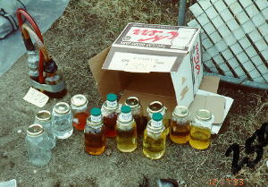
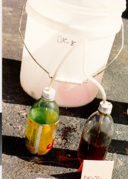
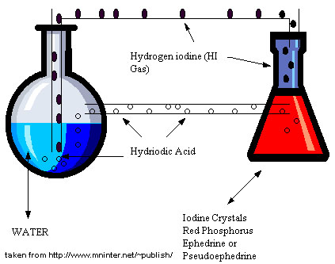

'The Cold
Method'
HTML by toast
First off, I'd like to thank all those who were kind enough to answer my post @ The Hive, so newbies like you and me can have more methods to make meth. I appreciate it, as always... toast
maybe yo can
figure this one out i've saved it for some time now and also linked it here
but have no clue as to how its read......
www.mninter.net/~publish/METHLAB/index3.htm
(Note: this is an anti-drug page, I provide the post un-edited,
but if I were to do something illegal like make meth (which I'm not), I would
only use this to get a dim idea of what a cold method setup might look like)
Worlock
.......... posted 06-27-99 04:12 PM
Member
www.mninter.net/~publish/METHLAB/index3.htm
"How to
make meth without heat"
The honey reaction will begin spontaneously when the chemical mix is right.
The ultimate
is to be in the lab at night during a lightning storm.
Prepare your solution, step to the window, and let the light energy from a lightning
flash supply the natural energy needed.
To use a camera flash-bulb would be considered crass and synthetic.
The mix is dry. It is hard to achieve because of variability in reagents, humidity, barometric pressure, room temperature.
5 ml of Water
is injected into the dry mix.
Any external energy can cause it to fire off.
The reaction
is done near an ice bucket in case the initial surge gets out of hand.
A very long hose is used, to compensate for the reactions ability to shoot up
the hose.
Once the initial
exothermia subsides, the mix again is quite dry.
10 ml water is injected, and the reactions moves out again, as the reaction
slows,
10 ml of water are added until the addition of water has no effect.
The hose is then back washed with water, to wash any meth into the reaction
flask.
Good shit, the yields are fair. 70%
Ah am I revealing trade secrets again?
It is legendary
that lightening speed is how the gods make it.
That is the combination that is considered perfect. When a flash of light will
kick it in gear.
To combine your reactants so perfectly that the tiniest bit of added energy
will make it go, without blowing your ass up.
The reaction, is almost spontaneous.
Have your tape already cut into strips after adding the dry ingredients. Please stress the point to tape the shit out of the stopper, hose, and flask. I am talking about at least half a roll of duct tape. that flask should look pregnant at the top. The pressure goes ballistic and can blow HI everywhere, not to mention the H2 explosion.
The last time I saw the cook, Mikey, he was very burnt from this process, not burned out but, I mean his long hair was fried up, like from the flame and shit that got away.
The ratios,
depended upon the quality of reactants but somewhere in the range of 1.5 : 1
: 1 by weight of
Iodine : ephed : RP
You can see that the RP is at a dangerous level.!
The reaction is done in 15 minutes.
Two 5 gallon
water bottles were used once, One held the reaction mixture, the second bottle
had two hoses
one to the reaction bottle and
one leading up to the roof.
The idea was if the reaction got too strong the second bottle might contain some of the product instead of blowing it onto the roof.
I should mention
that the free end of the hose was fixed to the opening of a 1 gallon plastic
jug.
The bottom is cut off, filled with foam and kitty litter and foam to contain
and help disperse the gas.
The gas was
something I was curious about, I managed to sneak a very faint wiff, and immediately
wished I had not.
The gas will ruin anything it gets close to.
The rapidity
of the process was super.
Flash, bang, add some water, and a bit more.
Viola
Anyway, I'm
going to be commenting on various cold method pictures I've found:
• What people have said, and how thier own comments relate to each picture
(or seem to relate, thier not my setup, (remember, I don't have a setup, I'm
not a criminal ) of course...)
• What I think about the setup..
and finally, a link my own drawing of what a cold method setup might look like (another shitty diagram)... with some shitty instructions... (maybe not that shitty, but theres no hope for me, yet (no want either, I don't like competition), in competing with a seasoned bee like Worlock...)
ONWARD!!!
Image #1

Ok folks, toast here... this picture was taken from Rhodium's Clandestine Lab Photo Album (check out his page, http://rhodium.lycaeum.org, it's my personal favorite).
Look at all those jars of what appears to be honey... sweet nectar of the gods... well, fuck the honey, we're talking about the setup itself...
Look up in left hand corner of this image, see it there, the mighty cold method setup. Now it appears as though there are two hoses. One of the hoses connects the two bottles (looks like a braided hose, just like in methhead's Push/Pull, methhead is the fucking man... anyway, so it's a braided hose. It looks almost like next to this hose theres a little tube, a pressure release tube I would imagine, but this statement contradicts the one I'm about to make, so you figure it out...
The second hose is the red one (I dont see any other hose, do you?), it appears to be just a normal hose. Ok, quoting Worlock (he's also the man, the FUCKING man)
>Two 5 gallon
water bottles were used once, One held the reaction mixture, the second bottle
had two hoses
>one to the reaction bottle and
>one leading up to the roof.
aha, so this red hose must be the second hose, on the second bottle... it just leads out to the ground or wherever instead of up to the roof, much less safe...
>The idea was if the reaction got too strong the second bottle might contain some of the product instead of blowing it onto the roof.
Get it boys and girls? Neither end of the braided hose would go into the reaction content (nor very far at all into the bottle). This allows for both HI gas, and H2 to go from bottle 1, to bottle 2, to the the end of the red hose (and out)... and if the pressure builds up, it also allows for liquids and stuff (in bottle 1), to go through the braided tube, and down into bottle #2, not out the red hose with the gasses (see the red hose doesn't go far down into the bottle either, none of them do)...
it could be, however, that the little tiny tube next to the braided does exist, for escaping gas (a small tube could be attatched), and the braided hose DOES go into the content, so that, and the red hose, are only for liquids... this is waaaay more likely than my first theory little thing...
I think... any comments on this, e-mail me,
chemistry@hushmail.com
anyway... OK! NEXT IMAGE...
Image #2

Ok chem hacks and hackettes, this picture, as you can see, was also taken from Rhodium's Clandestine Chemistry Photo Album. Good (Rhodium is also the man... I haven't spoken with him long enough to tell if he's THE FUCKING MAN, but he's a good guy, smart too, reeeeeeallly knows his shit)
anyway... This cold setup is much like Picture #1, except 1 difference...
There appears in this one to also be a little tube next to the hose on bottle #1, for attatching a tube to take care of the gasses...
There is also a second bottle, but looks like theres only one hose! well, I would assume the red hose in picture #1 is just a precaution, incase there gets to be too much liquid... interesting either way... next...
Image #3

AHH! leave it up to a site that provides info for law enforcement and dumb anti-drug folks (www.mninter.net/~publish/METHLAB/index3.htm) to just plain FUCK UP! or so it seems... maybe not though, let's try to make some sense of this oh-so-strange strange diagram.
ok... you have your reaction flask, the erlenmyer, the triangular red one... with all the reaction contents... then you have your round bottom flask, for the excess water and what-not... but theres other stuff...
first off, this picture sucks, if some one thinks of a good way to connect two flasks (a round bottom and an erlenmyer) at the middle, with a hose, let me know, until then, I will say this image sucks...
It appears as though both flasks are open at the top... however, if you use a 2 hole stopper in the erlenmyer flask, and a 3 hole stopper (do they make these, anyone know, e-mail toast, but if they dont make them, one could probably use a two neck flask with a 2 hole stopper and a 1 hole stopper) on the round bottom it could work.
The first hose (the one for the HI, up top) could go in one of the holes in the erlenmyer (flask #1) into flask #2, the round bottom one... in flask #1, it only goes down a little ways into the flask (like I thought for the braided hose in image #1), but in flask #2 this hose goes way down into the water, so the gas (gasses actually, as Worlock said, its HI and H2, not just HI) bubble through the water. This has been suggested in many HI/R synths using a refluxing... one would take the gasses in a tube off the top of the condenser, and pipe them far away into a bucket of water, and NaOH to basify the stuff, because the gasses would make it acidic... I'm not sure if that would be ok here, I don't know how that would work here, because of the second hose
the second hose would go in the remaining hole on the first flask, down into the contents... and the second hole on flask #2 (if they make 3 hole stoppers... someone tell me) ANYWAY! almost done here... the second tube, the one for the hydriodic acid, would go here (I dont see the point of having the hydriodic automatically go into the the water as would happen with the diagram, only incase it overflows)... just above the contents in this one...
well now, theres still 1 hole left over on flask #2? why you ask? HAVE YOU LEARNED NOTHING? those gasses need to go somewhere, this would be the place for the tube... the tube to the roof, or to a bucket of water, or where-ever... actually, someone could probably take the gasses directly off the first one, and only use the second one for excess liquid, like image 1 or image 2... damn anti-drug people, thier just weird...
last updated: 7/02/99